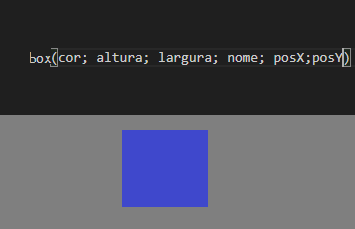
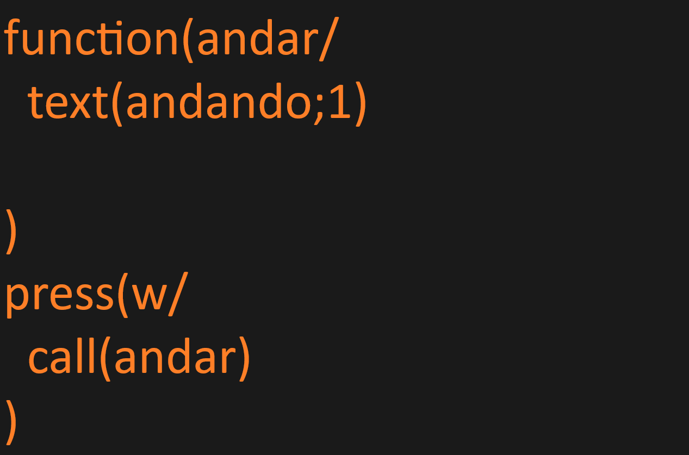
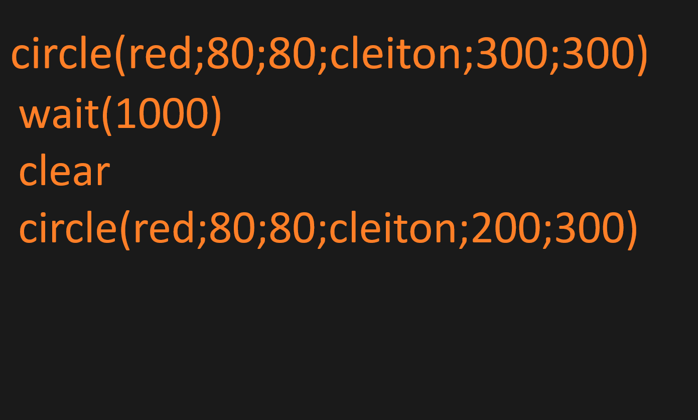
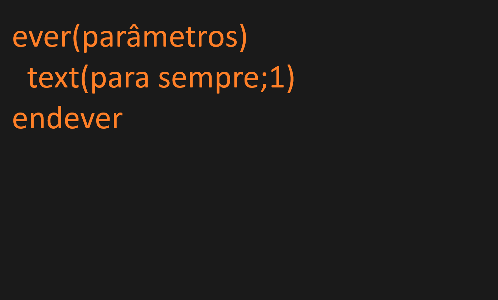

Introdução
AdamCommand é uma linguagem de programação parecida com .json+html+javascript e facil de entender como .scratch e não é limitada, contem loops como "ever{atraso} endever" condições como if(2==2/ O que ira acontecer)
criador de interfaces graficas simples como box(cor;altura;largura;nome;x;y) ou circle(cor;altura;largura;nome;x;y) e também delays faceis de entender como wait(milessegundos)e para atualizar elementos a qualquer momento temos o clear() que limpa a tela
temos stop() que para o código.E console para depuração, o histórico, temos variaveis value(nome;valor) temos funções func(nome/oque irá acontecer) temos call(nome da função) que executa uma função e insert(elemento html) que é usado para inserir elementos
para o usuário ter mais liberdade.Temos um menu de exportação e importação simples com o formato .adamCommand.
Propósito
Pensada para ser util para fazer jogos 2d e 3d e interfaces graficas e até mesmo animações.Planejada para ser facil de entender. ela funciona pegando uma unica string do textarea, usando um parse simples e um parse complexo para subdividir ela
e essas subdivisões são subdivididas para encontrar seus parâmetros e executar as funções dentro da subdivição e para funções que execultam outras funções como if(parametros comparação parametros) endif onde com essas subdivisões localizam o endif ou endfunction e até mesmo endever
mais proximo e execultar tudo o que está entre eles se a condição for satisfeita, ou a função for chamada e até mesmo em loop. e até mesmo, além dos dois parses,usa varios tipos de parse para dividir a string em subdivisões cada vez menores. e usando trims para ingnorar espaços desnecessários
sintaxe basíco:
os parâmetros para funções em .AdamCommand funciona da seguinte forma: eles são separados por ; por exemplo box(green;80;80;cleiton;300;300). para criar um elemento grafico usamos:




temos aqui este exemplo, ele explica como usar lógica no adamcommand:


exemplo de movimento:

como importar imagems:


se quiser parar o código: